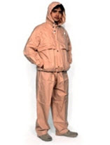
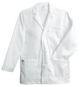
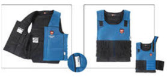
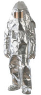
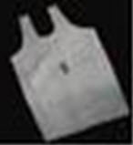
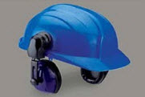
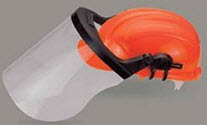

1. Body Protection Products
2. General Safety Products
3. Head Fall Protection
Body Protection Products | |
 | Full Aluminized complete Body Suit These suits are ideal for the persons working in nuclear plants, thermal power stations and other industries where chemicals & radiations can affect human body. |
|  | Rain Suit Duck Back These suits Cover the whole body & protect from harmful chemicals and radiations. |
| Bamboo Jacket Khaki Riots Control Jacket is made of Canvas Fabric With inbuilt Bamboo Sticks (Front & Back). It is used in protecting chest and backside of body. | |
 | Cover All Dangri Suitable for work wears with multiple pockets. |
|  | Chemical Suit Heat resistance leather suite (paint & jacket) made of industrial use consisting of inner heat resistance lining, and protect from heat upto 200 degree centigrade. |
|  | Cooling Vest Ice melts at temperatures above 0oc but at the moment of transition from solid to liquid uses up to 50 times more energy compared to a rise of 1oc when an object already is in either liquid or solid condition. It is used to store energy, absorb excessive heat and to keep the body cool and comfortable. |
 | Tychem-C Pressure suit contain separate attachable hood with air sound muffling system. Hood has air supply system with sound muffling. |
|  | Aluminised Fire Proximity Suit Aluminized fire proximity suit. |
|  | Leather Apron |
General Safety Products | |
 | Cylinder Trolley Cylinder trolley is used in carrying acetylene and oxygen gas cylinders and also is helpful in carrying normal accessories like cutting torches, gas hose pipes, pressure regulators and other required tools. |
Head Fall Protection | |
 | Helmet with Ear Muff They are developed from fine technology and have features like high quality, lightweight, comfortable and simple uses. They also include ear defenders which can be used for a wide range of industrial applications. |
|  | Ultra Helmet with Visor |
 | Chin Straps and Sweat Bands |
| Lecture 4 | Lecture 6 |